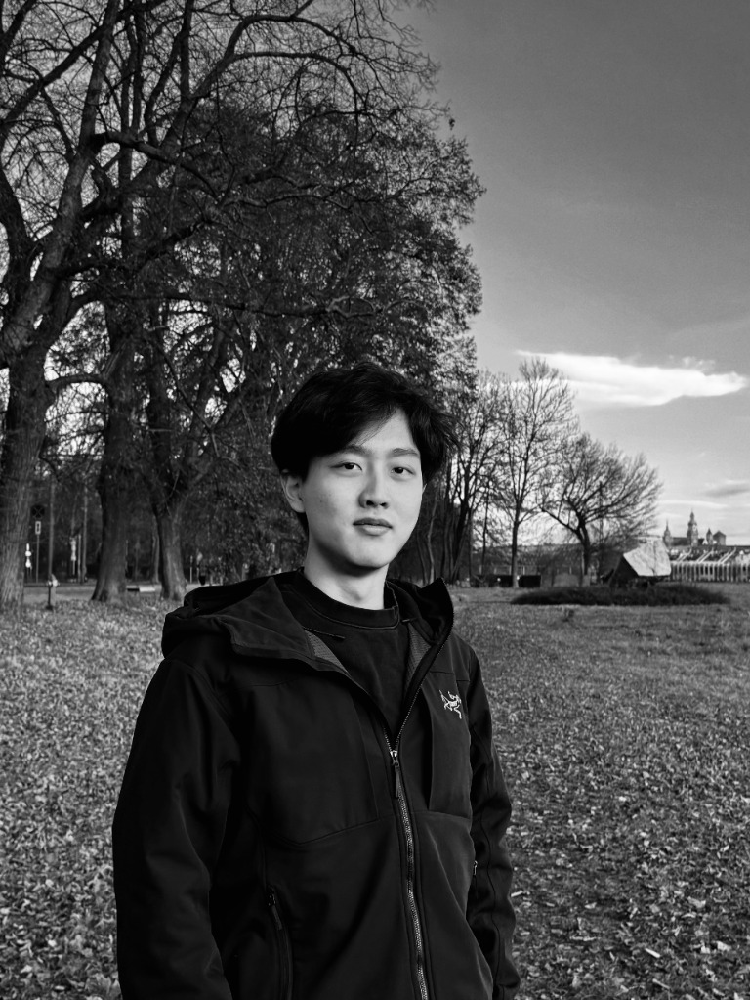

Jinlin Li
Architectural Designer · Interdisciplinary Practice
I approach design through real-world problems, examining needs, assumptions and constraints before choosing a form or medium. My practice connects architecture, art and digital methods, with an emphasis on clarity, quality and long-term usefulness.
I am interested in adaptive and sustainable design: how spaces, materials and experiences can respond to changing needs while making thoughtful use of existing resources.

项目 / Project
Selected projects appear first. Use the filters or view all projects to browse the complete archive. The Gaudí entry presents concept references; proposals, prototypes and process photographs are labelled.
About & experience.
From needs to tested decisions.
- Identify needs
- Map constraints
- Check assumptions
- Compare options
- Verify and adjust
Adaptive design asks how environments can respond to different users, changing needs, site conditions and long-term use.
I treat adaptation as an approach that applies to both new and existing spaces. Depending on the problem, the work may connect spatial, material, visual, sound or interactive methods.
I value simplicity, quality, usefulness and sustainability. Form should respond to function, context and experience, with attention to materials, details and how a place can be used and maintained over time.
Education
Cracow University of Technology · Heritage Protection
Cracow University of Technology
Practice & methods
Architectural proposals, physical models, spatial and exhibition concepts, and visual research. Individual and collaborative roles are identified within each project where verified.
Architectural design, adaptive reuse, spatial concepts and visual communication.
Rhino, Grasshopper, AutoCAD, QGIS, Blender, Unreal Engine and TouchDesigner.
JINLIN LI
- Phone / WhatsApp
- +48 516 808 763WhatsApp
- JINLIN LI